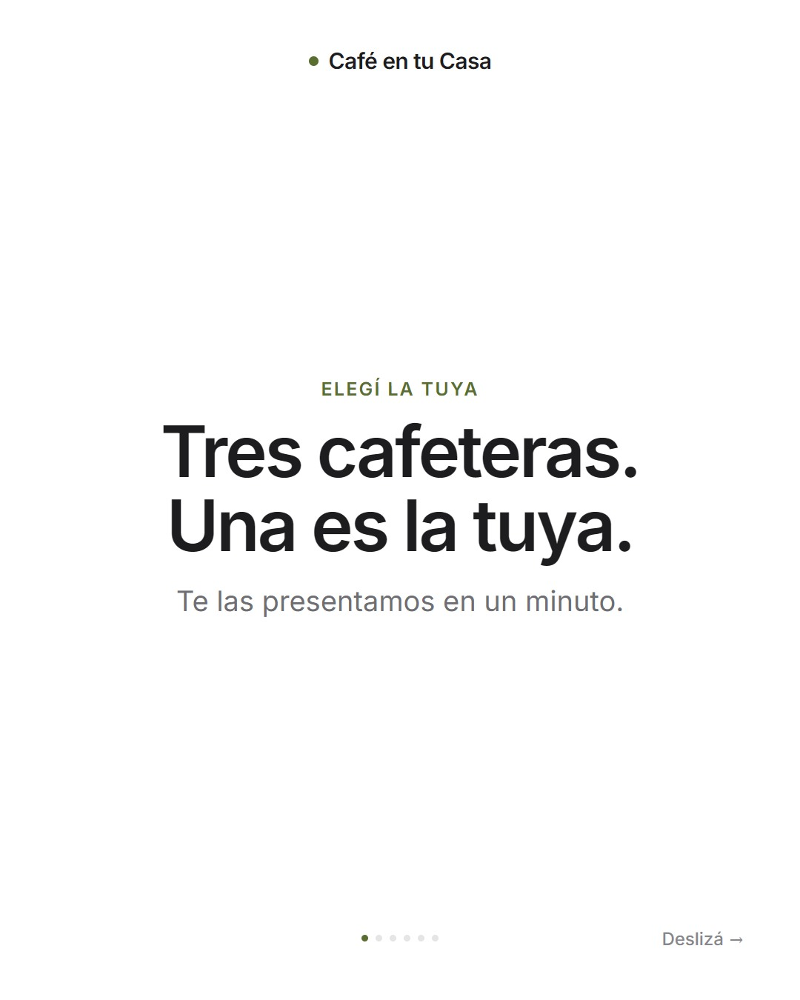
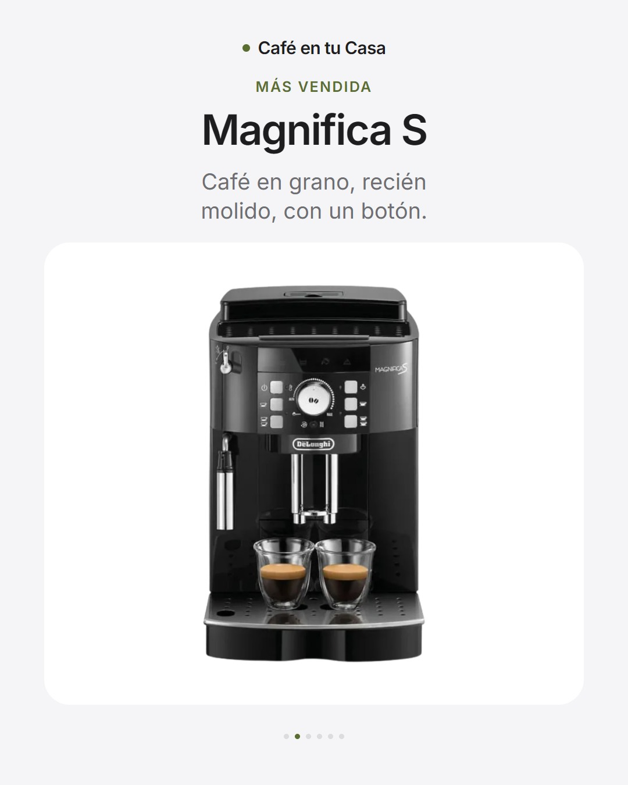
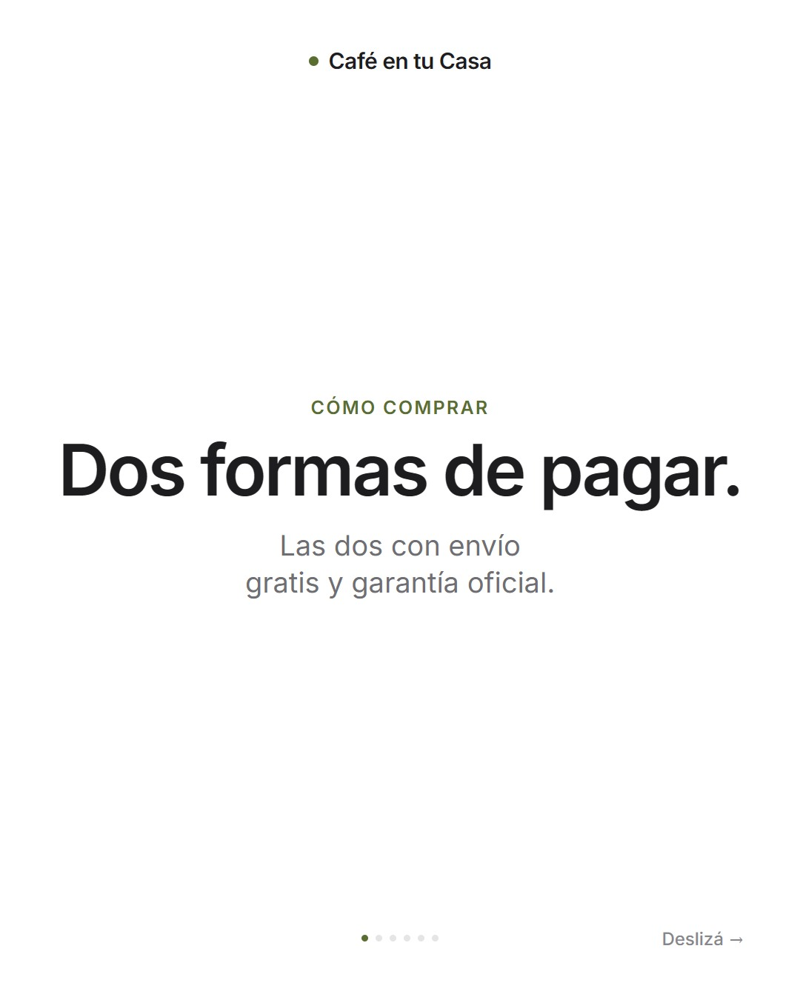
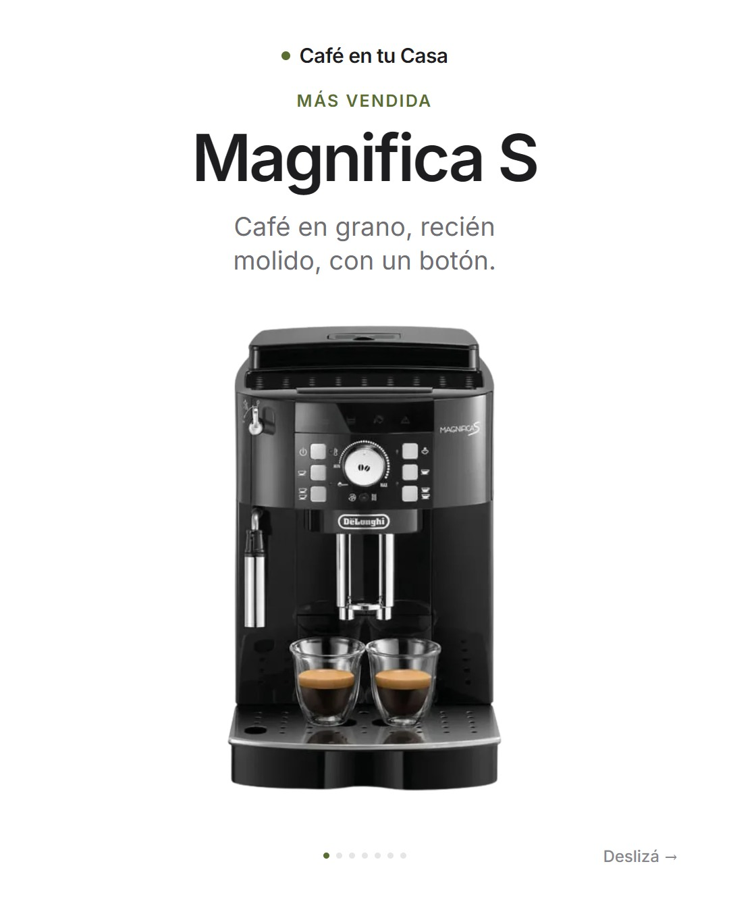
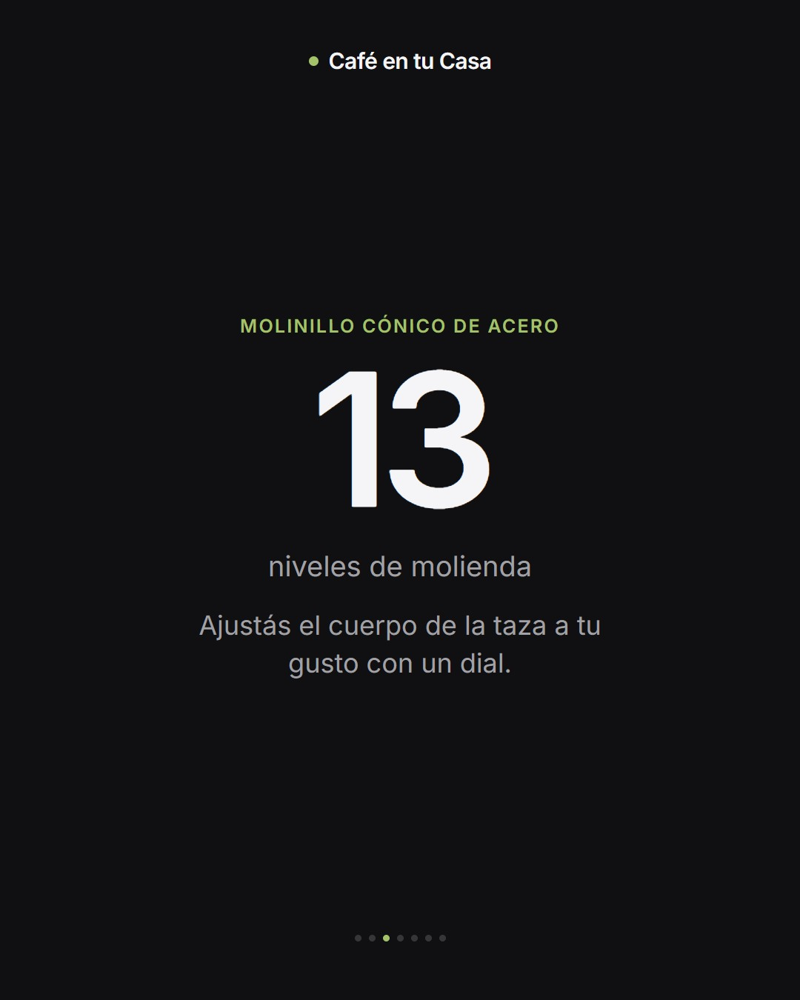
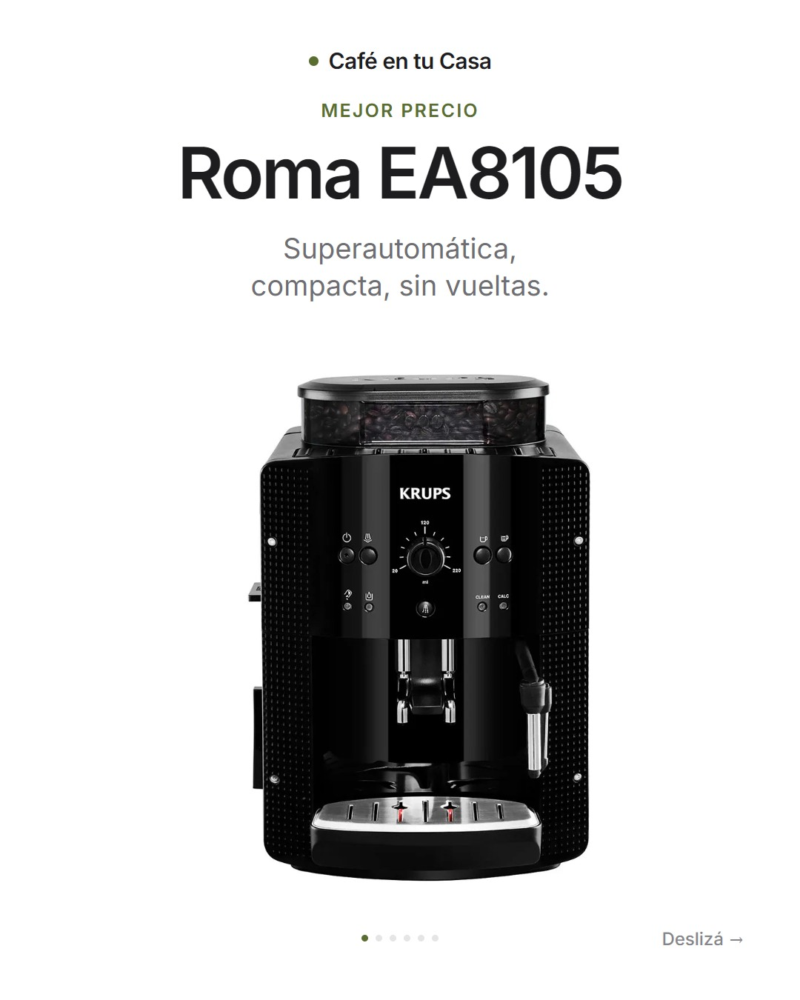
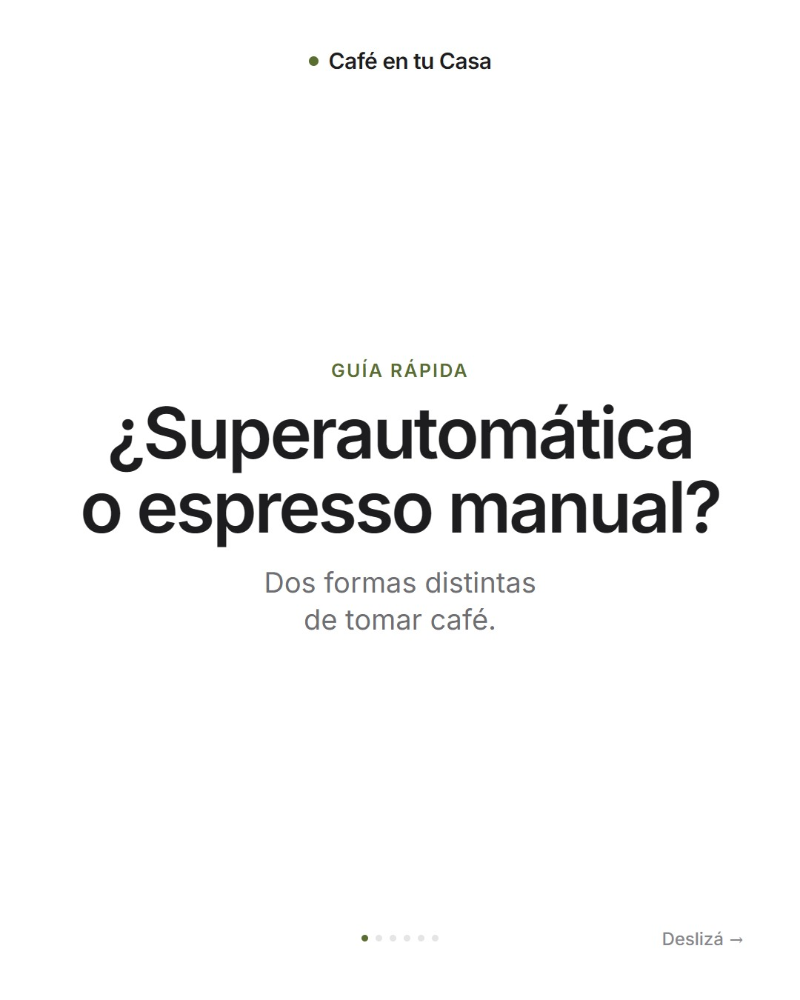
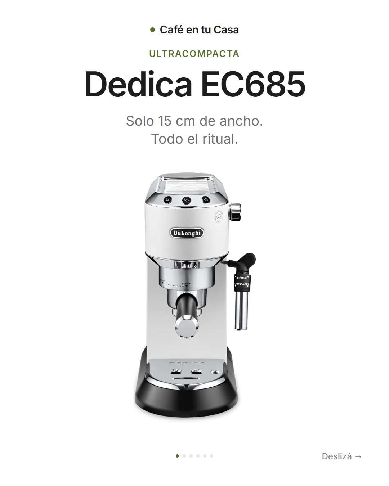
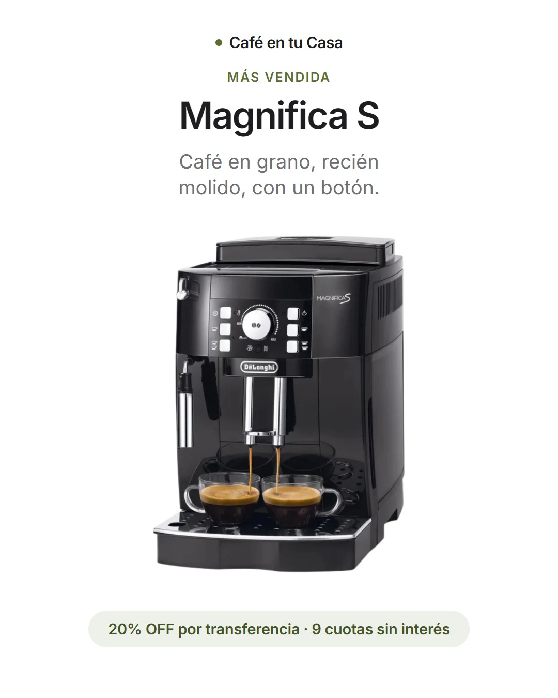

Qué es la marca, a quién le habla, cómo se ve y cómo atiende: en el sitio, en Instagram, en Mercado Libre y dentro de la caja. Al final, el plan de los próximos 90 días.
1 · Propósito y promesa
Por qué existe Café en tu Casa
Que el café de cafetería sea parte de todos los días, en tu casa.
La promesa
Te ayudamos a elegir la cafetera justa para cómo tomás café, te la mandamos sin vueltas y seguimos ahí cuando la estrenás.
Qué vendemos de verdad
No vendemos máquinas: vendemos el primer café de la mañana sin salir de casa. La cafetera es el medio; la decisión bien tomada es lo que el cliente nos agradece.
Qué no somos
No somos un catálogo infinito ni una tienda de ofertas. Tenemos pocas cafeteras, elegidas, y sabemos explicar por qué cada una.
2 · A quién le hablamos
Cinco compradores, una misma duda: «¿cuál me conviene?»
Salen de la audiencia real de @cafentucasa (56% hombres, 76% entre 25 y 54 años, 39% en CABA, después Mar del Plata, Córdoba y Rosario) y del panel de compradores con el que probamos la carta de agradecimiento.
El práctico
el más común
Quién
Hombre de 45 a 54, CABA. Compra seguido por Mercado Libre desde el celular, en cuotas.
Qué busca
Apretar un botón y tener un buen café. Saber rápido cuánto sale y cuándo llega.
Qué lo frena
Textos largos, emotivos o con letra chica.
Le decimos: «Del grano a la taza, con un botón. 9 cuotas sin interés.»
El que regala
fechas
Quién
Compra para otra persona: Día de la Madre, del Padre, Navidad. Quien abre la caja no es quien compró.
Qué busca
Un regalo que se use todos los días y que llegue a tiempo.
Qué lo frena
No saber si llega para la fecha.
Le decimos: «El regalo que se usa todos los días. Consultá la fecha de entrega antes de comprar.»
El entusiasta
Dedica
Quién
25 a 40 años, sigue cuentas de café, valora el buen diseño y detecta lo genérico.
Qué busca
Prepararlo él: portafiltro, molienda, espuma. Datos concretos.
Qué lo frena
Contenido básico o de plantilla.
Le decimos: «15 cm de ancho. Todo el ritual.»
La que se anima
60+
Quién
60 años o más, usa WhatsApp y Facebook; un QR le cuesta. Agradecida cuando la atienden bien.
Qué busca
Que le expliquen paso a paso y que alguien le conteste.
Qué la frena
Letra chica, pasos que no entiende, términos técnicos.
Le decimos: «Escribinos por WhatsApp y te ayudamos a elegir.»
El negocio
local chico
Quién
Panadería, oficina o local que quiere servir café sin barista.
Qué busca
Que aguante el uso y sea fácil de limpiar.
Qué lo frena
Mensajes emotivos; recibe muchas cajas y no lee.
Le decimos: «Un botón por taza. Así se limpia en dos minutos.»
3 · Por qué nos eligen
La tienda que te ayuda a elegir
Para quien quiere café de cafetería en casa sin complicarse, Café en tu Casa es la tienda que te ayuda a elegir la cafetera justa y te la manda sin vueltas.
Frente a otros vendedores de Mercado Libre
Asesoramiento: el test de 4 preguntas y respuestas por WhatsApp.
Pocas cafeteras, elegidas: sabemos explicar cada una.
Contenido útil: tips de uso y de limpieza, no solo fotos de catálogo.
Frente a las tiendas grandes
Atención de persona a persona, rápida y por WhatsApp.
20% OFF por transferencia o efectivo, o cuotas sin interés en Mercado Libre.
Seguimiento después de la compra: la carta, los tips y el recordatorio de mantenimiento.
Las pruebas
Lo que decimos se tiene que poder comprobar: opiniones en Mercado Libre, fotos reales de clientes y respuestas rápidas. Sin eso, el posicionamiento es solo una frase.
4 · Personalidad
Sobria, clara y cercana
La marca tiene que verse más cuidada que una publicación de Mercado Libre, y ser igual de clara a la hora de comprar.
Sobria
Pocas palabras, mucho aire y el producto como protagonista. Nada de estallidos, sellos ni signos de exclamación en fila.
Clara
Siempre se entiende qué se vende, cuánto sale y cómo se paga. Las dos formas de pago van juntas, y siempre se aclara que no se combinan.
Cercana
Habla de vos, como un vendedor que sabe y no apura. Ayuda a elegir antes que a cerrar la venta.
Honesta
Solo lo que es cierto y se puede cumplir. Si no sabemos una fecha de entrega, decimos que la confirmamos.
5 · Logo
El punto y el nombre
La marca se firma con un punto oliva seguido del nombre en Inter seminegrita. Es el logo definitivo: las propuestas con símbolo quedan descartadas. El punto mide un poco menos de la mitad de la altura de la letra y va siempre a la izquierda.
Sobre blanco
Café en tu Casa
Sobre gris
Café en tu Casa
Sobre negro
Café en tu Casa
Sobre oliva
Café en tu Casa
Impreso en blanco y negro
Café en tu Casa
Abreviado · foto de perfil
C
Cómo se escribe
Café en tu Casa, con mayúscula en Café y en Casa.
En Instagram, @cafentucasa.
Nunca todo en mayúsculas ni abreviado en texto.
Aire y tamaño
Alrededor, un espacio libre igual a la altura de la letra «C».
En pantalla, nunca más chico que 14 px de alto de letra; impreso, 4 mm.
En piezas va arriba, centrado o a la izquierda.
El punto
Oliva #5B6E32 sobre fondos claros; oliva claro #A3C26A sobre negro.
En impresión en blanco y negro, el punto va en negro.
La «C·» abreviada solo se usa donde el nombre entero no se lee: foto de perfil y favicon.
Café en tu Casa
No: en mayúsculas ni espaciado
Café en tu Casa
No: el punto de otro color
Café en tu Casa
No: sobre degradados o encima de una foto sin velo
6 · En redes
El logo aplicado a cada perfil
La misma foto de perfil, la «C·» sobre negro, en Instagram, WhatsApp y Mercado Libre, para que quien pasa de un lugar a otro reconozca la cuenta.
cafentucasa
•••
C
—publicaciones
814seguidores
—seguidos
Café en tu Casa
Cafeteras espresso y superautomáticas De'Longhi
20% OFF por transferencia · Cuotas sin interés
Envío gratis a todo el país cafe-en-tu-casa.vercel.app
SeguirMensaje
Cafeteras
Comprar
Envíos
Tips
Test









Foto de perfil
C
Perfil · 110 px
C
Historias · 64 px
C
Comentarios · 32 px
Se sube cuadrada, de 1080 × 1080 px, fondo negro #101012. Instagram la recorta en círculo: la «C·» ocupa el 60% del ancho y nada toca el borde.
WhatsApp Business
C
Café en tu CasaCuenta de empresa
Misma foto. Descripción: «Cafeteras De'Longhi. Te ayudamos a elegir.» Horario de atención cargado y respuesta automática fuera de horario.
Mercado Libre
C
Café en tu CasaPerfil del vendedor
El logo en cuadrado redondeado sobre negro. El nombre de la tienda, igual que en Instagram.
Biografía
Qué vendés, las dos formas de pago y el envío, en tres líneas. El enlace lleva al sitio. Mientras la Krups no tenga stock, la bio dice solo De'Longhi.
Destacadas
Cinco tapas sobre negro con un ícono de línea: Cafeteras, Comprar, Envíos, Tips y Test.
La grilla
Se alternan fotos de ambiente, placas blancas, grises y negras. Las portadas llevan poco texto, porque en la grilla se ven chicas.
7 · Color
Blanco, negro y un solo acento
La marca vive en neutros. El oliva es el único color propio y se usa poco: el punto, los epígrafes, las píldoras y el subrayado. Tocá un color para copiar su código.
Blanco y gris · 55%
Negro · 30%
Oliva · 15%
Colores de función
Verde WhatsApp #25D366: solo en el botón de WhatsApp.
Azul Mercado Libre #3483FA: solo en el botón de cuotas.
Verde cuotas #00A650: solo en «sin interés».
Cómo combinarlos
Texto casi negro sobre blanco o gris; texto blanco sobre negro u oliva oscuro.
Sobre negro, el oliva pasa a su versión clara.
Un solo fondo por pieza. Sin degradados.
Impresos
Todo lo que va en la caja se imprime en blanco y negro.
Sin fondos llenos: el acento pasa a ser un subrayado gris y los bloques llevan borde fino.
El punto del logo, en negro.
8 · Tipografía
Inter, grande y apretada
Una sola familia: Inter, de Google Fonts, en los pesos 400, 500, 600 y 700. Los títulos van en 600 con las letras un poco juntas; el cuerpo, en 400.
Título600 · interletra −3,5% · interlínea 1,05
Que la disfrutes, taza a taza.
Subtítulo600 · interletra −2,5%
Dos cafeteras. Una es la tuya.
Bajada400 · gris #6E6E73
Contanos cómo tomás el café y te decimos cuál te conviene.
Cuerpo400 · 17 px · interlínea 1,5
Despachamos el mismo día hábil si el pago se acredita antes de las 15 h.
Epígrafe600 · mayúsculas · interletra +9% · oliva
Más vendida
Reglas
Punto final en los títulos que son una frase.
Como mucho dos tamaños de texto por pieza, más el epígrafe.
Los números y precios, en el mismo Inter: sin tipografías de «oferta».
El subrayado
Para destacar dos o tres palabras de un título se usa un subrayado bajo y ancho (oliva suave en pantalla, gris al imprimir). Nunca negrita extra ni otro color de letra.
Si Inter no está
En orden: la tipografía del sistema (San Francisco, Segoe UI, Roboto), Helvetica o Arial. Nunca una con serifas ni manuscrita.
9 · Componentes
Las piezas que se repiten
Son las mismas en el sitio, en Instagram y en lo impreso. Bordes muy redondeados, sin sombra dura ni borde de color.
Ultracompacta
Epígrafe
Una o dos palabras arriba del título: la etiqueta del producto o el tema.
20% OFF por transferencia · 9 cuotas sin interés
Píldora
Para las formas de pago y datos cortos.
Guardalo para comparar
Botón
Uno solo por pieza, con una sola acción escrita.
15cm
Dato grande
Un número enorme, su unidad chica y una línea que lo explica.
1Escaneá el código2Tocá «Opinar»
Pasos
Para cualquier cosa que el cliente tenga que hacer: numerados, una línea cada uno.
Radios
10 px en elementos chicos, 16 px en tarjetas, 22 a 30 px en tiles y fotos. Botones y píldoras, completamente redondos.
Aire
En una placa de 1080 px, al menos 76 px a cada lado; en una hoja A4, 22 mm. Si algo no entra, se saca texto antes que achicar el margen.
10 · Fotografía
El producto real, en una casa real
Dos estilos que conviven: el producto solo, sobre blanco, para mostrar la máquina; y fotos de ambiente cálidas, con la máquina real en una cocina, para que el perfil no sea todo texto y video.
Producto
Fondo blanco, luz pareja, la máquina entera.
Sobre fondos gris o negro, dentro de una tarjeta blanca redondeada.
Detalles reales: el café cayendo, el espumador, el panel.
Ambiente
Cocinas claras, luz de mañana, tonos crema y madera.
La máquina tiene que ser idéntica a la real (botones, logo, color). Si una foto con IA la cambia, se descarta.
Personas de 35 a 60, naturales, tomando café; nada de pose de catálogo.
Título arriba, grande y condensado, en crema sobre un velo suave.
No
Fotos de banco de otras cafeteras.
Máquinas sin stock (hoy, la Krups).
Precios escritos sobre la foto.
Filtros, marcos, stickers.
Lo que falta: la Dedica tiene una sola foto de producto. Una tarde de fotos propias (la máquina en una cocina, el café cayendo, la espuma) sirve para Mercado Libre, el sitio e Instagram a la vez.
11 · Voz y tono
Habla de vos, y habla poco
Español rioplatense, frases cortas y concretas. Primero el beneficio, después el dato. Un emoji como mucho por texto, y ninguno dentro de las imágenes.
AsíCafé en grano, recién molido, con un botón.
Así no¡¡La MEJOR cafetera del mercado, no te la podés perder!!
AsíSolo 15 cm de ancho. Todo el ritual.
Así noCafetera ultra compacta de diseño premium e innovador.
Así20% OFF por transferencia o 9 cuotas sin interés. No se combinan.
Así noSúper promo imperdible por tiempo limitado.
AsíTe confirmamos la fecha de entrega por WhatsApp.
Así noTe llega seguro antes del domingo.
AsíGuardalo para comparar. ¿Vos sos de cortado o de latte?
Así no¡Dale like, compartí, seguinos y comentá!
El tono según dónde
Instagram: útil y liviano. Un tip, una pregunta.
Mercado Libre: preciso. Datos, medidas, cómo se paga.
WhatsApp: cercano y rápido. Con nombre propio y sin plantillas largas.
La caja: agradecido y breve.
Palabras de la casa
Transferencia o efectivo y cuotas sin interés, siempre las dos, aclarando que no se combinan.
Superautomática y espresso manual.
Taza a taza, del grano a la taza.
12 · Instagram
Lo que sabemos que funciona
Reglas que salen de las métricas de @cafentucasa. Se revisan cada semana en el reporte; cuando un dato nuevo las contradice, se cambian.
Post y carrusel1080 × 1350 px (4:5)
librelibre
Historia y reel1080 × 1920 px (9:16)
Carruseles con precio
Es lo que más alcanza: el carrusel del Día de la Madre llegó a 430 vistas, el doble que cualquier reel. Siempre con las dos formas de pago y la aclaración de que no se combinan.
Reels de 9 a 12 segundos
Los reels se miran entre 3 y 5 segundos. Gancho en el primer segundo y el dato que vende antes del segundo 6. Sin montos en pesos en el video: quedan viejos.
Fotos de ambiente
Una o dos por semana entre las placas, para que el perfil no sea todo texto y video.
Cierre
Una sola acción («Guardalo para comparar») y una pregunta de elección fácil («¿Magnifica S o Dedica?»).
Horarios
Feed a las 10:00, de lunes a viernes, una pieza por día. Fin de semana, solo historias. No repetir tema dos días seguidos; «cómo se compra», una vez por semana como mucho.
Metricool: 20 por mes
El plan permite 20 publicaciones por mes. Antes de programar se cuentan las del mes y se dejan 2 o 3 de reserva para fechas especiales.
13 · Mercado Libre
Donde se vende casi todo
Casi todas las ventas entran por Mercado Libre, así que la publicación es la vidriera principal. Lo que más pesa para aparecer arriba: ventas, opiniones, preguntas respondidas rápido, buena reputación y una publicación completa.
Título
Lo que la gente busca, en orden: tipo, marca, modelo y el diferencial.
Cafetera Superautomática De'Longhi Magnifica S Molinillo Integrado
Cafetera Espresso De'Longhi Dedica EC685 Compacta 15 cm
Fotos, en este orden
La máquina sobre blanco, entera.
En una cocina (foto de ambiente).
Medidas: ancho, fondo y alto en cm.
Detalle: molinillo, espumador o panel.
Qué viene en la caja.
Descripción
Primera línea: para quién es.
Después: 4 características en lista, medidas y qué incluye.
Cerrar con cómo se envía y que respondemos preguntas en el día.
Sin teléfonos, webs ni redes: Mercado Libre no lo permite.
Preguntas
Responder en menos de una hora en horario de atención: influye en la posición y en la venta.
Saludo corto, respuesta concreta y una invitación a comprar.
Nunca datos de contacto ni pedir que escriban por fuera.
Reputación
Despachar en el plazo prometido y no cancelar ventas.
Si la Krups no tiene stock, la publicación va pausada, no activa sin stock.
Cada opinión cuenta: la carta en la caja y el mensaje a los 5 días.
Opiniones
Se piden cuando ya probaron la máquina, no al abrir la caja.
Se explica cómo: Mis compras → la cafetera → Opinar.
Nunca se ofrece nada a cambio ni se pide «5 estrellas».
Respuesta a una pregunta
Mercado Libre
¡Hola! Sí, la Magnifica S muele el grano en el momento y también acepta café molido. Mide 24 cm de ancho. Si querés, ofertá y la despachamos en el día. ¡Saludos, Café en tu Casa!
Postventa, a los 5 días
Mensajería de la compra
¡Hola! ¿Cómo te está yendo con la cafetera? Si tenés alguna duda con el uso, contanos por acá. Y cuando puedas, tu opinión sobre el producto nos ayuda mucho: Mis compras → la cafetera → Opinar. ¡Gracias por elegirnos!
14 · El sitio
cafe-en-tu-casa.vercel.app
El sitio es la ficha completa y el lugar del 20% OFF por transferencia. Lo encuentran desde Instagram y desde los mensajes; no desde Mercado Libre.
Se cambia en un solo archivo
Precios, cuotas, stock y links de Mercado Libre viven en assets/js/productos.js. Cambiando dos números se actualiza todo el sitio.
Sin stock
Con stock: false el producto pasa a «Consultar disponibilidad» y deja de aparecer en el test y en las piezas nuevas.
Medición
Vercel Analytics registra las visitas y los clics en WhatsApp y en Mercado Libre. Se mira una vez por mes, junto con las ventas.
15 · La caja
Lo primero que se ve al abrir
La caja es el único momento en que tenemos al cliente en la mano. Tiene que decir quiénes somos, darle algo útil para quedarse y pedirle la opinión en el momento justo.
La carta
Una sola carta para todos los modelos, A4 en blanco y negro: «Gracias.», el pedido de opinión en 3 pasos con su QR, y una tarjeta para recortar con tips de mantenimiento y un segundo QR. Ganó contra 5 variantes en el panel de compradores.
Cómo se arma
La carta va arriba de todo, doblada en tres, con «Gracias.» hacia afuera.
Debajo, la máquina con su embalaje original.
Cinta o sticker de cierre con el logo, si se consigue.
Antes de cerrar
Revisar que la carta tenga el QR bien impreso.
Anotar en la planilla qué carta fue en qué venta, para medir.
16 · Atención y postventa
Del pago al primer café, y después
Con pocas ventas por mes, cada cliente cuenta. Este es el recorrido que tiene que vivir cada uno.
Antes de comprar
Responder rápido
Preguntas de Mercado Libre y WhatsApp en menos de una hora en horario de atención. Si no sabemos la fecha de entrega, la confirmamos antes de que pague.
Día 0 · se acredita el pago
Despacho y aviso
Despachamos en el día si se acredita antes de las 15 h y mandamos el número de seguimiento.
Día de la entrega
La caja hace su trabajo
La carta agradece, ayuda a empezar y deja el QR para después.
Día 5
«¿Cómo te está yendo?»
Un mensaje por la mensajería de Mercado Libre: ofrecer ayuda y pedir la opinión. Es el momento con más chances de que opinen.
Mes 3
Recordatorio de mantenimiento
Si la compra fue por WhatsApp, un mensaje con un tip de limpieza o de descalcificación. Mantiene la marca presente sin vender nada.
Consulta por WhatsApp
antes de comprar
¡Hola! Gracias por escribirnos. Para recomendarte bien: ¿cuántos cafés toman por día en tu casa, y lo toman con leche? Con eso te digo cuál te conviene.
Despacho
día 0
¡Listo! Tu cafetera ya salió. Este es el número de seguimiento: [número]. Cualquier duda, escribinos por acá.
Si algo salió mal
reclamo
Hola, lamentamos mucho lo que pasó. Queremos resolverlo: ¿nos mandás una foto o un video de lo que ves? Te respondemos hoy con una solución.
A completar con Lucas: quién atiende WhatsApp y Mercado Libre, en qué horario, y los plazos reales de entrega en CABA y en el interior.
17 · Lo que nunca decimos
Promesas que no se pueden cumplir, o que no están permitidas
«Garantía oficial», «sellada de fábrica», «30 días para devolverla»No es así: solo aplican las políticas de Mercado Libre.
«Te llega seguro antes de…»Las fechas de entrega se confirman con Lucas antes de prometerlas.
Precios en pesos dentro de un videoEl video queda viejo y el precio cambia. Los montos van en el texto.
«Dejanos 5 estrellas» o algo a cambio de la opiniónMercado Libre lo prohíbe. Se pide una opinión sincera.
Teléfono, web o redes en Mercado LibreNi en la publicación, ni en preguntas, ni en mensajes. Tampoco el 20% OFF por transferencia.
Modelos sin stockNo aparecen en piezas nuevas mientras no haya stock.
«Somos un emprendimiento chico»La marca habla con seguridad; no pide por ser chica.
18 · Plan de 90 días
Vender mejor en Mercado Libre, con Instagram de apoyo
Hoy se venden 1 o 2 cafeteras por mes, casi todas por Mercado Libre. Por eso el plan pone primero la publicación y las opiniones, y deja a Instagram el papel de que nos conozcan y nos busquen.
Mes 1 · noviembre
La vidriera en orden
Títulos, fotos y descripción de las publicaciones según la sección Mercado Libre.
Pausar la Krups mientras no tenga stock.
Carta en todas las cajas y mensaje de postventa a los 5 días.
Responder preguntas en menos de una hora.
CyberMonday (2 al 4/11): carrusel con precios y aviso en historias.
Meta: las primeras 5 opiniones.
Mes 2 · diciembre
Fotos y Navidad
Fotos de ambiente de la Magnifica S y la Dedica para Mercado Libre, el sitio e Instagram.
Campaña de Navidad y Reyes para «el que regala», con fecha límite de compra para llegar a tiempo.
Probar publicidad dentro de Mercado Libre con un presupuesto chico y fijo.
Meta: el mejor mes del año en ventas.
Mes 3 · enero
Medir y decidir
Planilla de ventas por canal y por carta: qué funcionó.
Decidir qué pasa con la Krups (reponer o reemplazar).
Republicar en Instagram fotos de clientes con su cafetera, con permiso.
Revisar este manual con lo aprendido.
Meta: saber cuánto cuesta vender una cafetera.
Visitas a la publicaciónPanel de Mercado Libre, cada semana.
Ventas ÷ visitasSi sube, la publicación convence mejor.
OpinionesCuántas por cada venta entregada.
Tiempo de respuestaPreguntas respondidas en menos de una hora.
Guardados en InstagramLo que más pesa en el alcance.
19 · Reglas rápidas
Si hay que acordarse de siete cosas
1. Ayudamos a elegir
Antes que vender, recomendar la cafetera justa.
2. Un solo acento
Blanco, gris, negro y oliva. Impreso, blanco y negro.
3. Una idea por pantalla
Título, una línea de apoyo y aire.
4. El producto real
La máquina que se vende, idéntica, nunca otra.
5. Las dos formas de pago
Transferencia o efectivo con 20% OFF, o cuotas en Mercado Libre. No se combinan.
6. Responder rápido
Menos de una hora en horario de atención.
7. Solo lo cierto
Datos de la ficha y precios del día. Sin promesas que no se puedan cumplir.